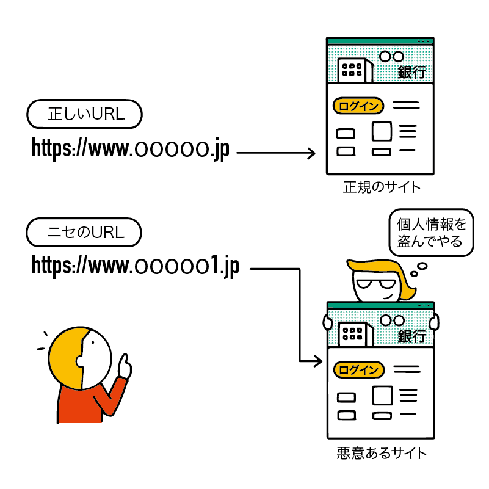
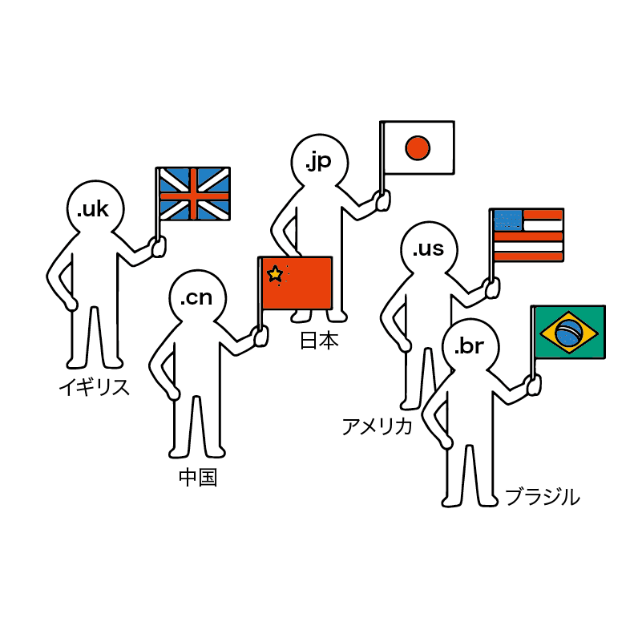
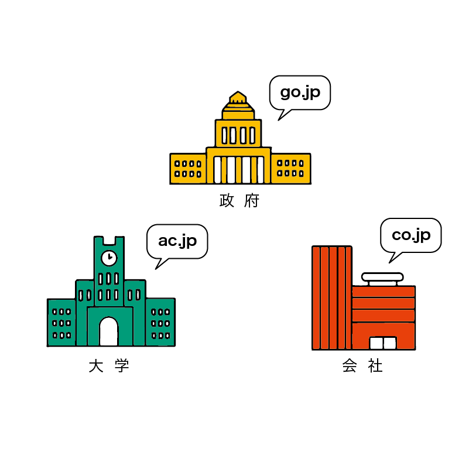

不審な URL を見分けよう
詐欺サイトなど、不正なサイトを見分ける手段として URL をよく見てみるというものがあります。
7 章の復習ですが、URL は以下のような構造になっています。
 URL の構造
URL の構造
- プロトコル名
- ホスト名（省略される場合あり）
- ドメイン名
- フォルダとファイル名など
この際、一番参考になるのがドメインです。今回は特にドメインについて詳しく見ていきましょう。
フィッシングサイトとは？
本物のサイトに偽装した、詐欺サイトのことです。
騙された人が本物のサイト用のIDやパスワードなどをフィッシングサイトに入力することにより、ID・パスワードが流出してしまいます。
中には見分けるのが困難なものもありますが、その多くは URL に関する知識があれば見抜くことができます。
ドメインとは
ドメイン名は「これは誰の Web サイトなのか」を表すものです。
たとえば、niconicoのドメインは nicovideo.jp で、N 高等学校のドメインは nnn.ed.jp です。
ドメインは個人や企業などが料金を支払えば、自由に取得できます（ただし、既に他者によって登録されているドメインは取得できません）。
ドメインの種類
nicovideo.jp の jp や nnn.ed.jp の ed.jp はドメインの種類を示します。
このドメインの種類を見ると、そのサイトがどんな特徴を持っているのかを見分けられることがあります。
ドメインの種類を少し眺めてみましょう。
世界中の誰でも取得できるもの
以下に示すドメインは元々用途が決まっていたものですが、現在は制限なく誰でも取得し、どんな用途にでも使うことができるようになっています。
- .com（ドット・コム）：company（カンパニー、会社）の略で、元々は会社のサイト用だった
- .org（ドット・オルグ）：organization（オーガニゼーション、組織）の略で、元々は非営利団体のサイト用だった
- .net（ドット・ネット）：network（ネットワーク）の略で、ネットワークに関連する会社・組織用だった
- .info（ドット・インフォ）：information（インフォメーション、情報）の略で、情報に関連するサイト用だった
取得できる人や団体が限定されているドメイン
ちょっと変わったドメインや、取得できる対象がかなり限定されているドメインもあります。以下に示すものは一例であり、覚える必要は全くありません。
- .gov（ドット・ガブ）：government（ガバメント、政府）の略で、アメリカ合衆国の政府関連サイトのみが利用できる
- .mil（ドット・ミル）：military（ミリタリー、軍事）の略で、アメリカ軍だけが利用できる
- .travel（ドット・トラベル）：旅行に関連する会社（旅行代理店など）だけが利用できる
覚える必要はありませんが、ドメインの .○○ 部分を正式には「トップレベルドメイン」と呼び、TLD と略します。 もし、どんな種類のドメインがあるか気になったら「TLD 一覧」などで Google 検索してみましょう。
国・地域別のドメイン
国・地域別のドメインもあります。ここでは一部を紹介します。
なお、これらの地域別ドメインは .jp なら ドット・ジェイピー のように、アルファベットでそのまま読みます。
- .jp：日本（Japan）
- .us：アメリカ合衆国（USA）
- .cn：中華人民共和国（China）
- .kr：大韓民国（South Korea）
- .tw：台湾（Taiwan）
- .hk：香港（Hong Kong）
- .uk：イギリス（United Kingdom）
- .fr：フランス（France）
- .de：ドイツ（Deutschland）
- .tv：ツバル（Tuvalu）
- .co：コロンビア（Columbia)
これらの国・地域別ドメインは、原則としてその国に住んでいる人や、そこに拠点がある会社しか利用できないようになっています。しかし、利益のために外国人や外国企業も利用できるように開放しているところもあります。
太平洋の島国ツバルに割り当てられたドメインは .tv です。国名の Tuvalu を略しただけなのですが、偶然にも「テレビ」の略である TV と一致しており、テレビ業界などでの需要がありそうなドメインだと言われていました。
ツバルは 2000 年に .tv ドメインの権利をアメリカの企業に売却し、世界中の人々や企業が使えるようにしました。この利益でツバルは国連の年会費を支払うことができるようになり、185 番目の国連加盟国になりました。
日本では AbemaTV などが .tv ドメインを使用しています。
YouTube はベルギーのドメイン .be を使い、youtu.be というドメインを取得しています。このように、ドメインを工夫して1つの単語のように見せかけることを「ドメインハック」といいます。
ユニークかつおしゃれで、さらにドメインも短くなるというメリットがありますが、どこの国のサイトか分かりにくくなるといった批判もあるようです。
なお、ここでの「ハック」は「工夫」といった意味で使われており、悪意ある「ハッキング」を示すものではありません。
jpドメインの分類
日本を示す .jp ドメインにも更に分類があります。
取得できる団体などを制限しているドメインは、信頼できるサイトかどうかを判断する根拠になります。
たとえば、災害時に政府や自治体の公式サイトから信頼できる情報を得たい場合は .go.jp や lg.jp のドメインになっているかどうかを確認するとよいでしょう。逆に、.com などで「政府の公式サイト」と名乗っている場合は本物ではない可能性が高いため、十分気をつけましょう。
以下は必ず覚えておく必要はありませんが、ある程度知っておくと便利でしょう。
- .jp：汎用（はんよう）JPドメインと呼ばれる。日本に住所があれば誰でも（どんな会社でも）取得できる。
例：nicovideo.jp（ニコニコ） - .co.jp：企業のみ取得できる。「企業」を意味するcorporation（コーポレーション） の略。
例：dwango.co.jp（株式会社ドワンゴ） - .ac.jp：主に大学などの教育機関のみ取得できる。「学問」などを意味するacademic（アカデミック） の略。
例：u-tokyo.ac.jp（東京大学） - .ed.jp：主に保育所、幼稚園、小学校、中学校、高等学校のみ取得できる。「教育」を意味するeducation（エデュケーション） の略。
例：nnn.ed.jp（N 高等学校） - .go.jp：日本の政府機関や、政府に関連する法人のみ取得できる。「政府」を意味するgovernment（ガバメント） の略。
例：mlit.go.jp（国土交通省） - .lg.jp：日本の地方自治体（都道府県や市区町村）および、その関連団体のみ取得できる。「地方自治体」を意味するlocal government（ローカル・ガバメント） の略。
例：metro.tokyo.lg.jp（東京都） - .or.jp：企業以外の組織のみ取得できる。「組織」を意味するorganization（オーガニゼーション） の略。
例：unic.or.jp（国際連合広報センター）
なお、.co.jp は 1 つの企業につき 1 ドメインしか取得できないため、1つの会社が複数のサイトを運営する場合は .net や .jp など他のドメインを使うこともあります。
また、大学や企業が一般の .jp ドメインを使う事もあります（早稲田大学の waseda.jp、バーチャルキャスト株式会社の virtualcast.jp、日本経済新聞社の nikkei.com など）。
企業専用のドメイン
ここまでで紹介した .jp や .com などのドメインは、条件を満たしていれば、ほとんどが年間数百円～数千円程度で取得できます。
しかし、2012年に自社専用のドメイン（ブランドTLD）を登録することが認められるようになりました。通常のドメインと比べると莫大なお金が掛かりますが、一部の企業はブランド戦略としてこれらのドメインを取得しています。
不正なサイトのドメインを見抜く
ここまでで学んだ事を生かせば、URL やドメインから不正なサイトを見抜けるようになります。
なお、本物（公式）のサイトがハッキングされて乗っ取られてしまった場合などは URL だけで見分けることはできません。
そのため、 URL のチェックだけで 100% 身を守れるわけではありませんが、最低限必要な自衛策として覚えておきましょう。
ドメインの種類から判断する
日本企業のサイトと称しているにも関わらず、.cn（中国）や .us（アメリカ合衆国）などのドメインになっている場合はちょっと疑ってみる必要があるでしょう。
また、日本政府のサイトだと称しているにも関わらず、誰でも取得できる .com などになっている場合も疑ったほうがよいでしょう。
他のドメインに似せようとしているものは疑う
×××××-cojp.com のように、一見して .co.jp のように見せかけているが実際は .com であったり、コロンビアの .co を使って .co.jp に似せようとしていたり、紛らわしいドメインを使っている場合はかなり怪しいサイトだと判断できます。
他にも、サイト名のスペルがちょっと違うといった偽サイトもあります。例えば、google（グーグル）の l（エル） を数字の1 に置き換えて、 goog1e としているような偽物も考えられます。
特に個人情報などを入力するときは念入りにチェックしましょう。
何も関係ない文字列になっている場合は疑う
仮に、皆さんが Web サイトを作ってビジネスをするなら、どういったドメインを取得したいでしょうか。
普通は「わかりやすいドメイン」にしたいと思うはずです。
実際の例を見てみましょう。
例えば、アマゾンは amazon.co.jp、楽天は rakuten.co.jp、クロネコヤマト（ヤマト運輸）は kuronekoyamato.co.jp というドメインを取得しています。
皆さんがよく使うサービスのドメインも、ほとんどはそうなっているのではないでしょうか。
しかし、詐欺サイトはこういった「分かりやすい」ドメインを使っていない場合があります。
例えば「アマゾンからのお知らせです。こちらをクリックしてください。 wkjadsnkjs4.xxxxxxxdns.org」といったメールや SMS などが届いた場合、ここに載っている URL はあまりにも「アマゾン」からかけ離れているため、詐欺サイトの可能性が高いと判断できます。こういったリンクを受け取った場合は絶対に開かないようにしましょう。
ブラウザの警告を参考にしよう
不正なサイトを開こうとしてしまった場合、Chrome などのブラウザが以下のような 警告画面 を表示する場合があります。
もし、Web サイトを開こうとしたときにこういった表示に遭遇した場合、そのサイトは危険な可能性が極めて高いものです。「戻る」ボタンを押してページを開かないようにしましょう。